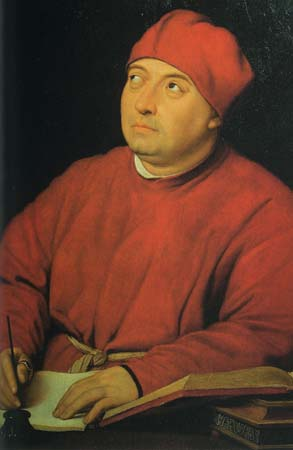

| Главная страница |
Архитектура |
Художественное искусство |
Музыка и театр |
|
Леонардо да Винчи Микеланджело Рафаэль Боттичелли |

Микеланджело Буонарроти (1475- 15б4) - величайший мастер Высокого Возрождения, создавший выдающиеся произведения скульптуры, живописи и архитектуры. Детство Микеланджело прошло в маленьком тосканском городке Ка-презе близ Флоренции. Юность и годы учения он провёл во Флоренции. В художественной школе при дворе герцога Лоренцо Медичи ему открылась красота античного искусства, он общался с великими представителями гуманистической культуры. Флоренции принадлежат почти все скульптурные работы Микеланджело. Он похоронен во флорентийской церкви Санта-Кроче. Однако в равной мере и Рим может быть назван городом Микеланджело. В 1496 г. он приехал в Рим, где к нему вскоре пришла слава. Самое известное произведение первого римского периода - «Пьета» («Оплакивание Христа») (1498-1501 гг.) в капелле собора Святого Петра. На коленях слишком юной для такого взрослого сына Марии распростёрто безжизненное тело Христа. Горе матери светло и возвышенно, лишь в жесте левой руки словно выплёскивается наружу душевное страдание. Белый мрамор отполирован до блеска. В игре света и тени его поверхность кажется драгоценной. Вернувшись во Флоренцию в 1501 г., Микеланджело взялся исполнить колоссальную мраморную статую Давида (1501-1504 гг.). Статуя достигает пяти с половиной метров высоты. Она олицетворяет безграничную мощь человека. Давид только готовится нанести противнику удар камнем, пущенным из пращи, но уже ощущается, что это будущий победитель, полный сознания своей физической и духовной силы. Лицо героя выражает несокрушимую волю. Изготовленная по заказу Флорентийской республики, статуя была установлена у входа в Палаццо Веккьо Открытие монумента в 1504 г. превратилось во всенародное торжество. «Давид» украшал площадь более трёх с половиной столетий. В 1873 г. монумент был установлен в Галерее Академии изящных искусств во Флоренции. На старом месте, где поместил статую сам Микеланджело, теперь находится мраморная копия. Микеланджело считал себя только скульптором, что, однако, не помешало ему, истинному сыну Возрождения, быть и великим живописцем, и архитектором. Самое грандиозное произведение монументальной живописи Высокого Возрождения - роспись потолка Сикстинской капеллы в Ватикане, выполненная Микеланджело в 1508-1512 гг. Гробница папы Юлия II могла бы стать вершиной в области скульптуры, если бы Микеланджело удалось воплотить в жизнь свой первоначальный замысел. Проект Микеланджело был смел и грандиозен: сорок мраморных статуй должны были украсить мавзолей. Мастер взялся их изваять сам. Но гробницу в том виде, в каком её задумал Микеланджело, создать так и не удалось. После смерти Юлия II его наследники неоднократно заключали контракты с Микеланджело о возобновлении работ. Из предназначенных для гробницы статуй до нас дошли «Скованный раб» - сильный, коренастый юноша, который тщетно стремится освободиться от оков, и «Умирающий раб» - прекрасный юноша, который ожидает смерти как избавления от мук (около 1513 г.). Для второго этажа гробницы Юлия II предназначалась статуя древнееврейского пророка Моисея (1515-1516 гг.). Тугими извивающимися прядями ниспадает его борода, в напряжении застыли мускулы мощного тела, грозен взгляд широко раскрытых глаз. Моисей в трактовке Микеланджело - народный вождь, человек вулканических страстей, прозорливый мудрец. Многое в творчестве Микеланджело оставалось либо неосуществлённым, либо незаконченным. Обладавший на редкость независимым, резким и прямым характером, он тем не менее был вынужден служить всесильным заказчикам. На папском престоле сменялись владыки, и каждый следовал собственным вкусам, династическим и личным интересам. В 1520 г. Микеланджело получил заказ от папы Климента VII из рода Медичи. При флорентийской церкви Сан-Лоренцо, в которой были погребены члены семьи Медичи, мастеру предстояло построить и украсить скульптурой новую капеллу - их фамильную усыпальницу. Однако трагические события в Италии прервали работу над капеллой. В 1527 г. испанские войска Карла V заняли и разгромили Рим. Во Флоренции вспыхнуло народное восстание, и Медичи были свергнуты. К тому же в городе началась эпидемия чумы. Папа Климент VII в союзе с Карлом V организовал поход на Флоренцию, которая героически сопротивлялась. Во время осады Микеланджело руководил строительством укреплений. После падения республики от расправы его спасло лишь тщеславие Климента VII, мечтавшего увековечить свой род руками величайшего мастера. В условиях жестокого террора вернувшихся к власти Медичи, глубокого унижения Италии, гибели друзей и сподвижников в 1531 г Микеланджело возобновил прерванную работу над созданием капеллы, которая принадлежит к числу его самых замечательных произведений. Во Флоренции Микеланджело не чувствовал себя в безопасности. В 1534 г. он покинул родной город и переехал в Рим, где по заказу папы Павла III написал на торцевой стене Сикстинской капеллы знаменитую фреску «Страшный суд» (1536- 1541 гг.) На фоне холодного сине-пепельного неба множество фигур охвачено вихревым движением Господствует трагическое чувство мировой катастрофы. Близится час возмездия, ангелы возвещают о наступлении Страшного суда. Движение гигантских толп развертывается по кругу Справа неумолимым потоком низвергаются в ад грешники. Их тащат за собой дьяволы, преследуют бескрылые ангелы Слева возносятся к небесам праведники. В центре высится могучая обнажённая фигура Христа, вершащего Суд. Грозный, непреклонный, прекрасный в гневной беспощадности, он больше похож на языческого бога-громовержца. Поникшая Богоматерь полна глубокой скорби перед лицом безмерных человеческих страданий. Святой Варфоломей - символ устрашающего отчаяния. В руках святого - содранная с него кожа, на которой Микеланджело изобразил в виде искажённой страданиями маски своё лицо. Фреска была закончена Микеланджело в 1541 г. Для Италии это было время усиливающегося нажима Католической Церкви на гуманистическую культуру. Высокие, светлые идеалы, которым мастер поклонялся всю жизнь, ушли в прошлое Творение шестидесятишестилетнего Микеланджело вызвало резкое недовольство в церковных верхах. Папа Павел IV Караффа счёл это произведение непристойным, так как в нем было множество обнажённых фигур Микеланджело было предложено задрапировать некоторые фигуры, на что художник ответил- «Скажите папе, что это дело маленькое и уладить его легко Пусть он мир приведет в порядок, а картинам сообщить пристойность можно очень быстро» Даниеле де Вальтерра, преданный ученик Мике-ланджело, внес во фреску требуемые изменения, постаравшись, однако, уберечь ее от сильного искаженияВ последние десятилетия жизни мастер занимался только архитектурой и поэзией Творчество великого Микеланджело составило целую эпоху и далеко опередило своё время, оно сыграло грандиозную роль в мировом искусстве, а также оказало влияние на формирование принципов барроко. |